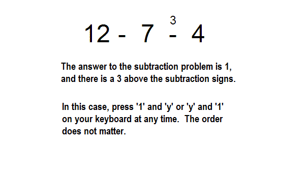

<!doctype html>
<html>
    
    <head>
        <title>Solving Subtraction Problems</title>
        <!-- Load jQuery -->
        <script src="http://ajax.googleapis.com/ajax/libs/jquery/1.10.2/jquery.min.js"></script>
        <script src="scripts/raphael.js"></script>
        <!-- Load the jspsych library and plugins -->
        <script src="scripts/jspsych.js"></script>
        <script src="scripts/plugins/jspsych-text.js"></script>
        <script src="scripts/plugins/jspsych-single-stim.js"></script>
        <script src="scripts/plugins/subtractionStimPlugin.js"></script>
	<script src="scripts/underscore_min.js"></script>
	<script src="scripts/plugins/jspsych-twostim-tworesponse.js"></script>
        <!-- Load the stylesheet -->
        <link href="experiment.css" type="text/css" rel="stylesheet"></link>
    </head>
    
    <body>
        <div id="jspsych_target"></div>
    </body>
    
    <script type="text/javascript">
	
		/* Define all possible trials */
		var numMatrix = [
			['10','4','6','5','1','3','4'],
			['11','4','7','6','1','3,4'],
			['9','4','5','2','3','1','4'],
			['12','4','8','5','3','1','4'],
			['13','4','9','6','3','1','4'],
			['8','3','5','4','1','2','4'],
			['9','3','6','4','2','1','4'],
			['11','5','6','4','2','3','4'],
			['12','5','7','4','3','2','4'],
			['15','6','9','4','5','1','4'],
			['11','5','6','4','2','3','5'],
			['13','5','8','6','2','3','5'],
			['14','5','9','7','2','3','5'],
			['12','5','7','4','3','2','5'],
			['14','5','9','6','3','2','5'],
			['15','5','10','7','3','2','5'],
			['12','5','7','3','4','1','5'],
			['15','5','10','6','4','1','5'],
			['16','5','11','7','4','1','5'],
			['9','3','6','5','1','2','5'],
			['10','4','6','5','1','3','5'],
			['10','3','7','5','2','1','5'],
			['13','6','7','5','2','4','5'],
			['12','4','8','5','3','1','5'],
			['15','7','8','5','3','4','5'],
			['15','6','9','5','4','2','5'],
			['16','7','9','5','4','3','5'],
			['18','7','11','5','6','1','5'],
			['14','6','8','7','1','5','6'],
			['15','6','9','8','1','5','6'],
			['13','6','7','5','2','4','6'],
			['15','6','9','7','2','4','6'],
			['16','6','10','8','2','4','6'],
			['15','6','9','5','4','2','6'],
			['17','6','11','7','4','2','6'],
			['18','6','12','8','4','2','6'],
			['15','6','9','4','5','1','6'],
			['18','6','12','7','5','1','6'],
			['19','6','13','8','5','1','6'],
			['11','4','7','6','1','3','6'],
			['12','5','7','6','1','4','6'],
			['13','5','8','6','2','3','6'],
			['15','7','8','6','2','5','6'],
			['13','4','9','6','3','1','6'],
			['14','5','9','6','3','2','6'],
			['16','7','9','6','3','4','6'],
			['17','8','9','6','3','5','6'],
			['15','5','10','6','4','1','6'],
			['17','8','9','6','3','5','6'],
			['15','5','10','6','4','1','6'],
			['17','7','10','6','4','3','6'],
			['18','7','11','6','5','2','6'],
			['19','8','11','6','5','3','6'],
			['21','8','13','6','7','1','6']
		];
		
//probes.length + times.length = 24 unique trial type presentations. 
//There need to be 4 repetitions of each trial type presentation.  24 * 4 = 96 total trials.
		var welcome = "Welcome to the experiment.  Press Enter to continue.";
		var instructions1 = '<div id="instructions"><p>During the experiment, you will be asked to solve a series of subtraction problems that look like this:</p>\<p></p>\<p>Press Enter to continue.</p>';
		var instructions2 = '<div id="instructions"><p>Use the number keys 0-9 on top of your keyboard to type the answer, and the "y" or "n" key for "yes" or "no". </p>\<p></p>\<p>Solve the problems and determine whether you see a certain number above the subtraction signs.  Work as quickly as you can without sacrificing accuracy.  Always work from the leftmost number to the rightmost when subtracting.</p>\<p>Press Enter to continue.</p>';
		var instructions3 = '<div id="instructions"><p>Sometimes you will not see a number above the subtraction signs.  Just type the answer when this happens. </p>\<p></p>\<p>Press Enter to begin some practice exercises.</p>';
	
		
		var times = [500,1000,1500,2000];
		var pick_times = times[Math.floor(Math.random()*4)];
		var trials = [];
		var randProbeA = 0;
		var randProbeB = 0;	
		
		for (var i=0;i<54;i++) {
			//use this to control which probe conditions to cycle through.
			//1-4 draw probes from numMatrix; 5 & 6 generate random probes
			//from randProbeA and randProbeB
			var probes = [6,5];
			var showProbe = probes[Math.floor(Math.random()*probes.length)];
			var randProbeA = _.random(1,9);
			var randProbeB = _.random(1,9);
			var t = {};
			t.stimuli = [createStimulus(numMatrix[i],0),createStimulus(numMatrix[i],showProbe,500)];
			t.timing_first_stim = pick_times;
			t.choices = [[48,49,50,51,52,53,54,55,56,57],[78,89]];
			if(showProbe == 5){
				t.choices = [[48,49,50,51,52,53,54,55,56,57]];
				}
			trials.push(t);
		}
		
		//trials is an [] with 400 + elements
		//so, trials[10] is an object that looks like:
		//trials[10].stimuli = [stimulus1, stimulus2];
		//trials[10].timing_first_stim = 750;
		
		var experiment = [];
		
		welcome = {
			type: 'text',
			text: [welcome],
			timing_post_trial: 750
		};
		
		experiment.push(welcome);
		
		instructions1 = {
			type: 'text',
			text: [instructions1],
			timing_post_trial: 0
		};
		
		experiment.push(instructions1);
		
		instructions2 = {
			type: 'text',
			text: [instructions2],
			timing_post_trial: 0
		};
		
		experiment.push(instructions2);
		
		instructions3 = {
			type: 'text',
			text: [instructions3],
			timing_post_trial: 2500
		};
		
		experiment.push(instructions3);
		
		for(var row = 0; row < trials.length; row++){
			var block = { 
				type: 'twostim-tworesponse',
				choices: trials[row].choices,
				stimuli: [trials[row].stimuli],
				timing_first_stim: trials[row].timing_first_stim,
				is_html: true
				};
		experiment.push(block);
		}
		        
        jsPsych.init({
            display_element: $('#jspsych_target'),
            experiment_structure: experiment,
            on_finish: function(data) {
                $("#jspsych_target").append($('<pre>', {
                    html: jsPsych.dataAsCSV()
                }));
                
                jsPsych.saveCSVdata("data.csv");
            }
        });
    </script>
</html>
